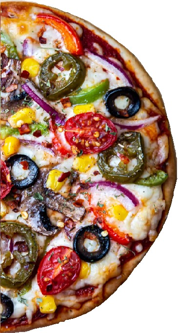

|  |
Ingrediente: Sos de roșii, caşcaval vegetal, ciuperci, porumb, cartofi cuburi, ardei gras, măsline kalamata, ceapă, pătrunjel aromatizat cu usturoi, ulei măsline. Abundenta de legume asezata tacticos pe blatul de pizza te va face sa te bucuri de un gust bogat, caruia nu vei simti ca ii lipseste nimic. Fie post sau doar o optiune alimentara, vei gasi in Pizza Vegetariana aceeasi savoare deplina a unei pizza clasica. Pizza vegetariene sau "pizza veggie" este o variantă de pizza care a câștigat popularitate în rândul celor care urmează o dietă vegetariană sau care încearcă să reducă consumul de carne. Această variantă de pizza conține ingrediente vegetale, precum legume, ciuperci, măsline, ardei, ceapă, porumb, spanac și alte verdeturi. Deși nu există o istorie oficială a pizzei vegetariene, se crede că aceasta a apărut în Italia, ca o variantă sănătoasă și gustoasă de pizza. Oamenii au început să includă mai multe legume și ingrediente vegetale în rețetele de pizza, ca alternativă la pizza tradițională cu carne și alte ingrediente bogate în calorii. Pizza vegetariene a câștigat popularitate în întreaga lume, fiind considerată o opțiune sănătoasă și delicioasă pentru cei care doresc să evite consumul de carne sau să reducă aportul de calorii și grăsimi. Această variantă de pizza este disponibilă în majoritatea restaurantelor și magazinelor de alimente și este una dintre cele mai apreciate feluri de pizza din lume. |